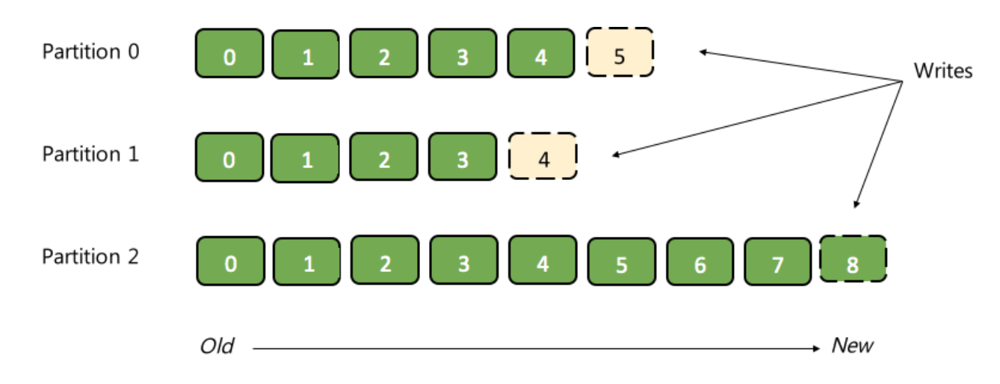

ingestion, processing, reaction, examples
Data
Data is produced every second, it comes from millions of sources and is constantly growing.
Have you ever thought how much data you personally are generating every day?
Data: direct result of our actions
There’s data generated as a direct result of our actions and activities:
- Browsing twitter
- Using mobile apps
- Performing financial transactions
- Using a navigator in your car
- Booking a train ticket
- Creating an online document
- Starting a YouTube live stream
Obviously, that’s not it.
Data: produced as a side effect
For example, performing a purchase where it seems like we’re buying just one thing – might generate hundreds of requests that would send and generate data.
Saving a document in the cloud doesn’t mean storing it on one server, it means replicating it across multiple regions for fault-tolerance and availability.
Performing a financial transaction doesn’t mean just doing the domain specific operation.
It also means storing logs and detailed information about every single micro step of the process, to be able to recover things if they go wrong.
It also means analyzing peripheral information about it to determine if the transaction is fraudulent or not.
We log tons of data. We cache things for faster access. We replicate data and setup backups. We save data for future analysis.
Data: continuous metrics and events
There’s data we track that is being constantly produced by systems, sensors and IoT devices.
It can be regular system metrics that capture state of web servers and their load, performance, etc. Or data that instrumented applications send out.
Heart rate data, or blood sugar level data. Airplane location and speed data – to build trajectories and avoid collisions. Real-time camera monitors that observe spaces or objects to determine anomalies in process behavior.
If we think about it – some of the data is collected to be stored and analyzed later. And some of the data is extremely time sensitive.
Analyzing logs of a regular web site isn’t super urgent when we are not risking anyone’s life.
Keeping track of credit card transactions is much more time sensitive because we need to take action immediately to be able to prevent the transaction if it’s malicious.
Then there’s something much more critical, like monitoring health data of patients, where every millisecond matters.
All of these real-life criteria translate to technical requirements for building a data processing system:
- Where and how the data is generated
- What is the frequency of changes and updates in the data
- How fast we need to react to the change
We need to be able to build solutions that can:
- Receive data from a variety of sources
- Perform specific computation and analysis on data on the fly
- Possibly perform an action as a result
- Data ingestion and decoupling layer between sources of data and destinations of data
- Data processing and reaction
Data ingestion: producers and consumers
When we, as engineers, start thinking of building distributed systems that involve a lot of data coming in and out, we have to think about the flexibility and architecture of how these streams of data are produced and consumed.
On earlier stages, we might have just a few components, like a web application that produces data about user actions, then we have a database system where all this data is supposed to be stored. At this point we usually have a 1 to 1 mapping between data producer (our web app) and consumer (database) in this case.
However, when our application grows - infrastructure grows, you start introducing new software components, for example, cache, or an analytics system for improving users flow, which also requires that web application to send data to all those new systems.
What if we introduce a mobile app in addition, now we have two main sources of data with even more data to keep track of.
Eventually we grow and end up with many independent data producers, many independent data consumers, and many different sorts of data flowing between them.
There are challenges!
How do we make sure that our architecture doesn’t become cumbersome with so many producers and consumers? Especially when same data should be available for some consumers after being read by other consumers.
How to prepare for the need to scale based on changes in rates of events coming in?
How to ensure data is durable and we won’t ever lose any important messages?
Apache Kafka
Apache Kafka is an open-source streaming system.
Kafka is used for building real-time streaming data pipelines that reliably get data between many independent systems or applications.
It allows:
- Publishing and subscribing to streams of records
- Storing streams of records in a fault-tolerant, durable way
To understand how Kafka does these things, let’s explore a few concepts.
Kafka is run as a cluster on one or more servers that can span multiple datacenters. Those servers are usually called brokers.
Kafka uses Zookeeper to store metadata about brokers, topics and partitions.
Kafka Topics
The core abstraction Kafka provides for a stream of records — is the topic.

You can think of a topic as a distributed, immutable, append-only, partitioned commit log, where producers can write data, and consumers can read data from.
Each record in a topic consists of a key, a value, and a timestamp.
A topic can have zero, one, or many consumers that subscribe to the data written to it.
The Kafka cluster durably persists all published records using a configurable retention period — no matter if those records have been consumed or not.
Partitions
Each partition in a topic is an ordered, immutable sequence of records that is continually appended to a structured commit log.
The records in the partitions each have an offset - number that uniquely identifies each record within the partition.
Each individual partition must fit on the broker that hosts it, but a topic may have many partitions distributed over the brokers in the Kafka cluster so it can handle an arbitrary amount of data. Each partition can be replicated across a configurable number of brokers for fault tolerance.
Each partition has one broker which acts as the "leader” that handles all read and write requests for the partition, and zero or more brokers which act as "followers” that passively replicate the leader. Each broker acts as a leader for some of its partitions and a follower for others so load is well balanced within the cluster.
Kafka Producers and Consumers
Producers publish data to the topics of their choice.
Consumers can subscribe to topics and receive messages. Consumers can act as independent consumers or be a part of some consumer group.
So Kafka not only helps with ingesting big amounts of data, but also works really well for small data in the environment with numerous systems that exchange data in a many to many fashion, allows flexibility in pace for consumers and producers, scales really well and is really fast.
Now, sometimes we need a system that is able to process streams of events as soon as they arrive, on the fly and then perform some action based on the results of the processing, it can be an alert, or notification, something that has to happen in real time.
Systems for stream processing
Even though this article is about Apache Spark, it doesn’t mean it’s the best for all use cases. The choice of a streaming platform depends on latency guarantees, community adoption, interop with libraries and ecosystem you're using, and more.
When considering building a data processing pipeline, take a look at all leader-of-the-market stream processing frameworks and evaluate them based on your requirements.
For example, Storm is the oldest framework that is considered a "true" stream processing system, because each message is processed as soon as it arrives (vs in mini-batches). It provides low latency, though it can be cumbersome and tricky to write logic for some advanced operations and queries on data streams. It has a rather big community.
Kafka Streams is a pretty new and fast, lightweight stream processing solution that works best if all of your data ingestion is coming through Apache Kafka.
Flink is another great, innovative and new streaming system that supports many advanced things feature wise. It has a passionate community that is a bit less than community of Storm or Spark, but has a lot of potential.
Spark is by far the most general, popular and widely used stream processing system. It is primarily based on micro-batch processing mode where events are processed together based on specified time intervals. Since Spark 2.3.0 release there is an option to switch between micro-batching and experimental continuous streaming mode.
Apache Spark
Spark is an open source project for large scale distributed computations.
You can use Spark to build real-time and near-real-time streaming applications that transform or react to the streams of data.
Spark is similar to Map Reduce, but more powerful and much faster, as it supports more types of operations than just map or reduce, it uses Directed Acyclic Graph execution model and operates primarily in-memory.
As of the latest Spark release it supports both micro-batch and continuous processing execution modes.
Spark can be used with the variety of schedulers, including Hadoop Yarn, Apache Mesos, and Kubernetes, or it can run in a Standalone mode.
We can use Spark SQL and do batch processing, stream processing with Spark Streaming and Structured Streaming, machine learning with Mllib, and graph computations with GraphX.
How Spark works
We can submit jobs to run on Spark.
On a high level, when we submit a job, Spark creates an operator graph from the code, submits it to the scheduler.
There, operators are divided into stages of tasks, that correspond to some partition of the input data.
Spark has physical nodes called workers, where all the work happens.
A driver coordinates workers and overall execution of tasks.
Executor is a distributed agent that is responsible for executing tasks. They run on worker nodes.
Task is the smallest individual unit of execution.
Apache Kafka + Spark FTW
Kafka is great for durable and scalable ingestion of streams of events coming from many producers to many consumers.
Spark is great for processing large amounts of data, including real-time and near-real-time streams of events.
How can we combine and run Apache Kafka and Spark together to achieve our goals?
Example: processing streams of events from multiple sources with Apache Kafka and Spark
I’m running my Kafka and Spark on Azure using services like Azure Databricks and HDInsight. This means I don’t have to manage infrastructure, Azure does it for me.
You’ll be able to follow the example no matter what you use to run Kafka or Spark.
Note:
Previously, I've written about using Kafka and Spark on Azure and Sentiment analysis on streaming data using Apache Spark and Cognitive Services. These articles might be interesting to you if you haven't seen them yet.There are many detailed instructions on how to create Kafka and Spark clusters, so I won’t spend time showing it here. Instead, we’ll focus on their interaction to understand real-time streaming architecture.
Existing infrastructure and resources:
- Kafka cluster (HDInsight or other)
- Spark cluster (Azure Databricks workspace, or other)
- Peered Kafka and Spark Virtual Networks
- Sources of data: Twitter and Slack
Instead, we are going to look at a very atomic and specific example, that would be a great starting point for many use cases.
Main points it will demonstrate are:
- How to build a decoupling event ingestion layer that would work with multiple independent sources and receiving systems
- How to do processing on streams of events coming from multiple input systems
- How to react to outcomes of processing logic
- How to do it all in a scalable, durable and simple fashion
Example story...
Imagine that you’re in charge of a company. You have quite a few competitors in your industry. You want to make sure your products and tools are top quality.
As an example, I am using Azure for this purpose, because there're a lot of tweets about Azure and I'm interested in what people think about using it to learn what goes well and to make it better for engineers.
Data sources: external, internal, and more
We can look at statements about Azure everywhere on the internet: it can be Twitter, Facebook, Github, Stackoverflow, LinkedIn, anywhere. There are hundreds of potential sources.There are many things we can do with statements about Azure in terms of analysis: some of it might require reaction and be time sensitive, some of it might not be.
Because I really want the example to be concise, atomic and general, we’re going to analyze user feedback coming from a public data source, like Twitter, and another data source, like Slack – where people can also share their thoughts about potential service.
As a result, we will be watching and analyzing the incoming feedback on the fly, and if it’s too negative – we will need to notify certain groups to be able to fix things ASAP.
When it’s positive – we’d like to track it, but don’t really need an immediate response.
Our input feedback data sources are independent and even through in this example we’re using two input sources for clarity and conciseness, there could be easily hundreds of them, and used for many processing tasks at the same time.
In this situation what we can do is build a streaming system that would use Kafka as a scalable, durable, fast decoupling layer that performs data ingestion from Twitter, Slack, and potentially more sources. It would also analyze the events on sentiment in near real-time using Spark and that would raise notifications in case of extra positive or negative processing outcomes!
Feedback from Slack
I'm using Azure Databricks interactive notebooks for running code as a great environment for demonstrations.
First part of the example is to be able to programmatically send data to Slack to generate feedback from users via Slack.
Slack Bot API token is necessary to run the code.
Listener for new Slack messages
When users are sending statements that might be potential feedback, we need to be able to notice and track thise messages. For example, we can check if a message is under specific Slack channel and focused on a particular topic, and send it to a specific Kafka topic when it meets our "feedback" conditions.
We can do so by overwriting an "onEvent" method of "SlackMessagePostedListener" from Slack API, and implementing the logic inside of it, including sending qualifying events to a Kafka topic. After defining the listener class, we have to register an instance of it. We can also un-register it when we'd like to stop receiving feedback from Slack.
Sending Twitter feedback to Kafka
The majority of public feedback will probably arrive from Twitter. We'd need to get latest tweets about specific topic and send them to Kafka to be able to receive these events together with feedback from other sources and process them all in Spark.
Analyzing feedback in real-time
Kafka is now receiving events from many sources. Now we can proceed with the reaction logic. We're going to do sentiment analysis on incoming Kafka events, and when sentiment is less than 0.3 - we'll send a notification to "#negative-feedback" Slack channel for review. When sentiment is more than 0.9 - we'll send a message to #positive-feedback channel.
Result
What we have achieved here is building a streaming system where we watch can user feedback from numerous independent sources that produce data at their own pace, and get real-time insights about when we need to take action and pay attention to things that need fixed.
We can plug in many additional independent processing scenarios, because once we sent data to Kafka it’s being retained and available for consumption many times.
We can not worry about strikes in user activity and handling the load because Kafka and Spark allow us to scale out and handle the pressure easily because of partitioning.
MORE THINGS
Spark and experimental "Continuous Processing" mode
Traditionally, Spark has been operating through the micro-batch processing mode.
In the Apache Spark 2.3.0, Continuous Processing mode is an experimental feature for millisecond low-latency of end-to-end event processing. It works according to at-least-once fault-tolerance guarantees. Currently, not nearly all operations are supported yet (e.g. aggregation functions, current_timestamp() and current_date() are not supported), there're no automatic retries of failed tasks, and it needs ensuring there's enough cluster power/cores to operate efficiently.
To use it, add a trigger:
trigger(Trigger.Continuous("1 second"))
A checkpoint interval of 1 second means that the continuous processing engine will record the progress of the query every second.
Currently it’s best to use it with Kafka as the source and sink for best end-to-end low-latency processing.
How is it different from micro-batch
With micro-batch processing, Spark streaming engine periodically checks the streaming source, and runs a batch query on new data that has arrived since the last batch ended
This way latencies happen to be around 100s of milliseconds.
Spark driver checkpoints the progress by saving record offsets to a write-ahead-log, which may be then used to restart the query.
Recording of offsets for next batch of records is happening before the batch started processing.
This way, some records have to wait until the end of the current micro-batch to be processed, and this takes time.
How "Continuous Processing" mode works
Spark launches a number of long-running tasks. They constantly read, process and write data.
Events are processed as soon as they’re available at the source.
In distinction to micro-batch mode, processed record offsets are saved to the log after every epoch.
We are capable of achieving end-to-end latency of just a few milliseconds because events are processed and written to sink as soon as they are available in the source, without waiting for other records.
Also, checkpointing is fully asynchronous and uses the Chandy-Lamport algorithm, so nothing interrupts tasks and Spark is able to provide consistent millisecond-level latencies.
Another new thing: Event Hubs + Kafka = ❤️
For those of you who like to use cloud environments for big data processing, this might be interesting.
Azure now has an alternative to running Kafka on HDInsight. You can leave your existing Kafka applications as is and use Event Hubs as a backend through Kafka API.
Event Hubs is a service for streaming data on Azure, conceptually very similar to Kafka.
In other words, Event Hubs for Kafka ecosystems provides a Kafka endpoint that can be used by your existing Kafka based applications as an alternative to running your own Kafka cluster.
It supports Apache Kafka 1.0 and newer client versions, and works with existing Kafka applications, including MirrorMaker - all you have to do is change the connection string and start streaming events from your applications that use the Kafka protocol into Event Hubs.
Functionally, of course, Event Hubs and Kafka are two different things. But this feature can be useful if you already have services written to work with Kafka, and you'd like to not manage any infrastructure and try Event Hubs as a backend without changing your code.
Note:
I also wrote a tutorial on how to use Spark and Event Hubs here.
Kubernetes environment
Many businesses lean towards Kubernetes for big data processing as it allows to reduce costs, offers a lot of flexibility and is convenient when a lot of your existing services are already running on it.
Existing Kubernetes abstractions like Stateful Sets are great building blocks for running stateful processing services, but are most often not enough to provide correct operation for things like Kafka or Spark.
I recommend looking into the topic of Operators, as they are important to help us help Kubernetes be aware of nuances of correct functioning of our frameworks.
Confluent has announced the upcoming Kafka operator coming out in a month or two, and I'm looking forward to trying it. More updates coming.
For those of you interested in running Spark on Kubernetes, it has an experimental (not production) native Kubernetes support since Spark 2.3. I wrote about it here, and here and here.
Thank you for reading!
I'd be happy to know if you liked the article or if it was useful to you. Follow me on Twitter @lenadroid or on YouTube. Always happy to connect, feel free to reach out!